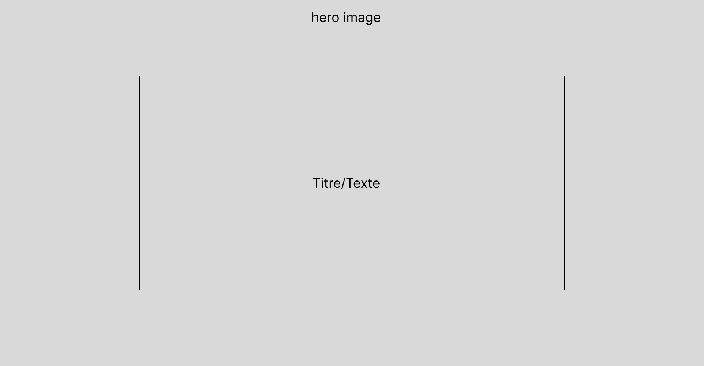

Feuille de Route : Ce qu'il Reste à Accomplir
Le projet est sur de bonnes rails, mais le voyage continue ! Cette section présente les prochaines étapes et les fonctionnalités que nous pourrions envisager d'ajouter pour enrichir encore davantage votre catalogue d'articles.
Notre objectif est de rendre la gestion de contenu toujours plus efficace et l'expérience utilisateur toujours plus agréable.
Améliorations Immédiates du Contenu
Pour rendre les articles plus informatifs et plus attrayants dès maintenant, quelques ajustements peuvent être apportés aux données affichées.
- Dynamiser la Date de Publication : Actuellement "Date inconnue", nous pourrions ajouter une balise spécifique dans chaque fichier HTML d'article pour que PHP l'extraie et l'affiche.
- Images Spécifiques aux Articles : Assurez-vous d'avoir une image pertinente (`hero-1920x1000.png` est un bon placeholder) pour chaque nouvel article créé.
Gestion du Contenu et Expérience Utilisateur
Pour une expérience complète et pour faciliter la navigation à mesure que le catalogue grandit, des fonctionnalités de gestion et d'organisation sont à considérer.
Organisation et Navigation
- Catégories et Tags : Permettre d'assigner des catégories ou des mots-clés aux articles pour faciliter la recherche et le filtrage.
- Pagination : Mettre en place un système de pagination pour les pages d'articles afin d'éviter le chargement d'un trop grand nombre d'articles en une seule fois.
Facilitation de l'Édition (pour un futur clone)
- Interface d'Administration Simplifiée : Quand le clone du site sera prêt, nous pourrions envisager un formulaire sur `admin-articles.html` pour générer automatiquement les squelettes d'articles HTML, voire des formulaires pour éditer le contenu.
- Upload d'Images : Intégrer une fonction d'upload d'images directement depuis l'interface d'administration.
Optimisation et Maintenance
Le développement est un processus continu. L'optimisation du code et la maintenance sont essentielles pour la performance et la sécurité à long terme du site.
- Nettoyage et Refactoring du Code : Revoir le code pour le rendre plus propre, plus efficace et plus facile à maintenir.
- Gestion des Erreurs : Améliorer la gestion des erreurs et l'affichage des messages pour l'utilisateur.
Conclusion Provisoire
Chaque fonctionnalité ajoutée est un pas de plus vers un système de gestion de contenu puissant et agréable à utiliser. Nous continuerons à itérer et à améliorer ce projet ensemble !